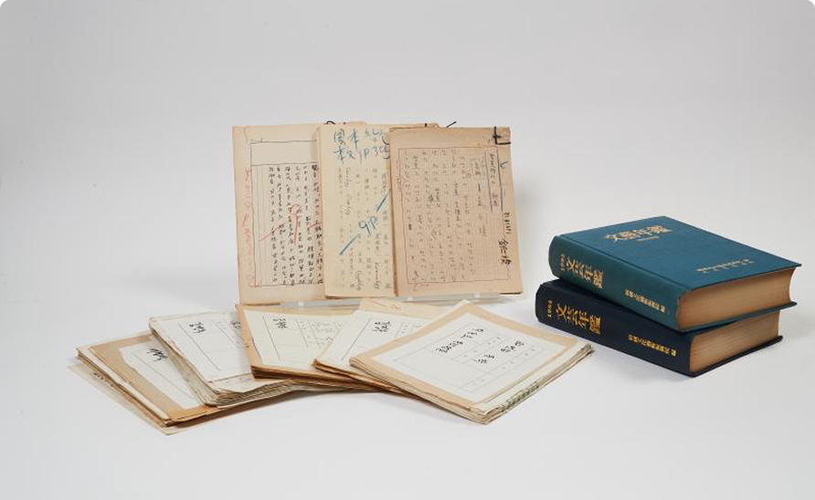
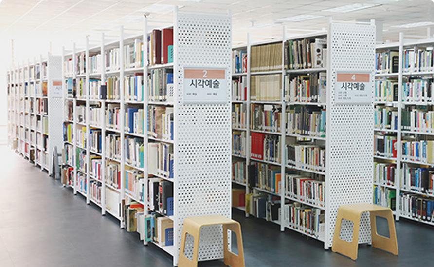
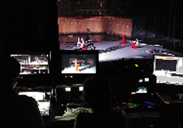
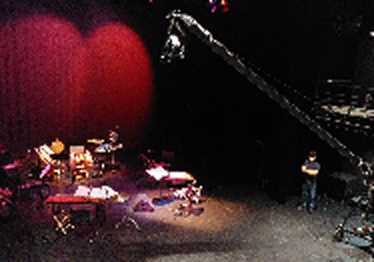
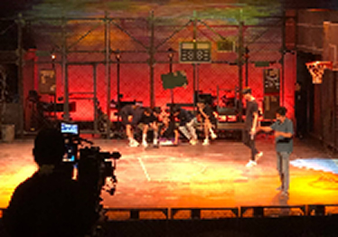
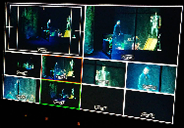
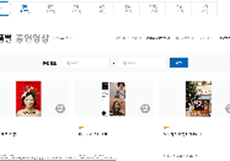

한국 근현대 예술의
기록을 수집·보존·공개합니다
아르코예술기록원은 한국 근현대 예술사의 흐름을 살펴볼 수 있는 중요 기록물을 수집, 보존, 서비스하고 있으며, 구술채록 사업, 공연영상화사업 등 기록물 생산 사업도 추진하고 있습니다. 한국 근현대 예술사와 관련이 높은 도서, 음반, 영상 등을 구입하여 서비스하는 한편, 소장 기록물에 기초한 전시, 교육, 연구 등 다양한 프로그램을 진행합니다.
실물 기록물의 경우 기록원을 방문하여 열람하실 수 있으며, 디지털화된 기록물은 D-art 메뉴에서 보실 수 있습니다.
수집·생산·일반자료 합계
디지털화 후 공개 자료
소장 컬렉션 기준
인물·단체 표준 식별 정보
통계 안내 · 핵심 카운트는 통합 데이터베이스에서 실시간 산출되며, 분야별 비율과 시기 분포는 분기별 큐레이션 검수를 거칩니다.
최종 갱신: 2026년 08월


2003년 첫발을 내디딘 한국문화예술위원회 아르코예술기록원의 ‘한국근현대예술사 구술채록사업’은 예술사 연구를 위한 원로예술인들의 예술적 체험과 활동, 작품 세계를 집중 기록하는 작업을 지속적으로 추진하고 있습니다.
| 구분 | 공연예술 | 시각예술 | 대중예술 | 문학 | 문화예술 | 합계 | ||||||
|---|---|---|---|---|---|---|---|---|---|---|---|---|
| 연극 | 무용 | 음악 | 기타 | 조형 | 건축 | 사진 | 기타 | |||||
| 생애사 | 40 | 25 | 35 | - | 54 | 5 | 2 | 5 | 19 | 34 | 1 | 220 |
| 주제사 | 14 | 42 | 11 | 1 | 34 | - | - | 2 | 3 | 1 | - | 108 |
| 소계 | 54 | 67 | 46 | 1 | 88 | 5 | 2 | 7 | 22 | 35 | 1 | 328 |
| 합계 | 168 | 102 | 22 | 35 | 1 | 328 | ||||||
구술채록 내용은 과거에 있었던 객관적 사실정보라기보다는 구술자의 시대적 경험, 가치관의 변화, 일정한 사안에 대한 해석을 다룹니다.
구술내용의 앞뒤 맥락에 대한 신중한 고려 없는 특정 내용의 인용 및 발췌는 개인의 명예훼손, 사생활 침해 등의 문제를 야기할 수 있어 구술기록을 열람할 시에는 구술자들의 발화맥락과 취지에 대한 다층적이고 신중한 접근이 필요합니다.
웹상에서 제공되고 있는 채록문 중 일부자료(2003년 ~ 2005년 채록내용)는 구술채록자료집(발간자료)과 쪽수가 다를 수 있으니 자료인용 시 문의주시기 바랍니다.
그밖에 구술내용의 공개범위가 결정되지 못한 일부 구술기록의 경우 서비스에 제한이 있을 수 있습니다. 방문열람을 원하시는 경우 소장자료 검색창과 한국예술디지털아카이브 검색창을 통해 이용여부를 반드시 사전에 확인하시기 바랍니다.
아르코예술기록원은 1980년부터 <공연영상화사업>을 통해 일회성 무대를 영상으로 기록하고 영구 보존해오고 있습니다. 단순 실황 촬영을 넘어 인터뷰, 접근성 영상, 대본 등 관련 자료까지 종합적으로 수집하며 입체적인 '살아있는 아카이브'를 구축하고 있습니다.
| 구분 | 연극 | 뮤지컬 | 무용 | 음악 | 전통 | 복합 | 기타 | 합계 |
|---|---|---|---|---|---|---|---|---|
| 1980-1989 (VHS) | 1 | - | 29 | 3 | 14 | - | 1 | 48 |
| 1990-2000 (VHS) | 188 | 6 | 152 | 12 | 48 | - | - | 406 |
| 2001-2013 (DVCAM) | 679 | 36 | 313 | 35 | 8 | 36 | 18 | 1,125 |
| 2014-2021 (FULL HD) | 338 | 25 | 160 | 16 | 13 | 21 | - | 573 |
| 2022-2025 (4K UHD) | 62 | 8 | 41 | 26 | 12 | 1 | - | 150 |
| 합계 | 1,268 | 75 | 695 | 92 | 95 | 58 | 19 | 2,302 |





한국문화예술위원회는 훌륭한 예술이 우리 모두의 삶을 변화시키는 힘을 믿습니다. 문화예술진흥을 위한 사업과 활동을 지원함으로써, 모든 이가 창조의 기쁨을 공유하고 가치 있는 삶을 누리도록 함께합니다.
한국문화예술위원회는 훌륭한 예술이 우리 모두의 삶을 변화시키는 힘을 믿습니다. 문화예술진흥을 위한 사업과 활동을 지원함으로써, 모든 이가 창조의 기쁨을 공유하고 가치 있는 삶을 누리도록 함께합니다.
한국문화예술위원회는 훌륭한 예술이 우리 모두의 삶을 변화시키는 힘을 믿습니다. 문화예술진흥을 위한 사업과 활동을 지원함으로써, 모든 이가 창조의 기쁨을 공유하고 가치 있는 삶을 누리도록 함께합니다.
한국문화예술위원회는 훌륭한 예술이 우리 모두의 삶을 변화시키는 힘을 믿습니다. 문화예술진흥을 위한 사업과 활동을 지원함으로써, 모든 이가 창조의 기쁨을 공유하고 가치 있는 삶을 누리도록 함께합니다.